约 2082 个字 23 张图片 预计阅读时间 10 分钟
Chap 11 | File System Implementation
章节启示录
本章节是OS的第十一章。
1.File-System Structure and Implementation¶
-
Layered File System：
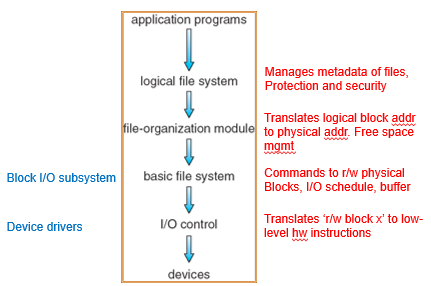- I/O控制层：包括设备驱动程序和终端处理程序，以在主内存和磁盘系统之间传输信息。设备驱动程序可以作为翻译器。
- 基本文件系统：只需向适当设备驱动程序发送通用命令，以读取和写入磁盘的物理块。每个物理块由磁盘的数字地址来标识。
- 文件组织模块：知道文件及其逻辑块以及物理块。可以将逻辑块地址转成物理块地址，以供基本文件系统传输。
- 逻辑文件系统：管理元数据信息。元数据包括文件系统的所有结构，而不包括实际数据（或文件内容）。
- 分层是为了更好地模块化，把特定功能封装起来，使得用户只需要从逻辑层面关心操作。
- i-node在logical这个层面进行管理
-
Disk structures：
- Boot control block (per volume 每个卷的) 引导控制块，可以包含从该卷引导操作系统的所需信息。
- Volume control block per volume (superblock in Unix 每个卷的) 超级块，存整个卷的metadata，包括卷（或分区）的详细信息（如分区的块的数量、块的大小、空闲块的数量和指针、空闲的FCB数量和FCB指针等）
- Directory structure per file system（每个文件系统的）
- Per-file FCB (inode in Unix)
-
In-Memory File System Structures：
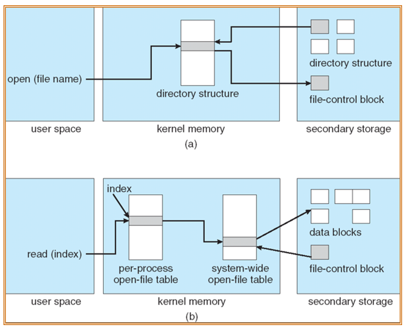-
Figure 12-3(a) refers to opening a file.寻找到对应的文件，在内存中建立特定的结构
-
Figure 12-3(b) refers to reading a file.有两个打开文件表（上一章提到的），如果在系统层面的打开文件表已经打开，可以直接建立映射，并直接阅读到data block的特定位置。
-
更直观的图：分两个阶段去做，通过FCB可以直接访问到文件A
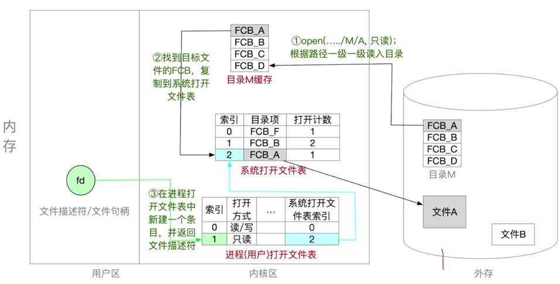
-
-
Virtual File Systems：VFS提供两个重要功能：
- 通过定义一个清晰的VFS接口，它将文件系统的通用操作和实现分开。VFS接口的多个实现可以共存在同一台机器上，允许透明访问本地安装的不同类型的文件系统。
- 使用vnode唯一表示网络上的一个文件。这种网络的唯一性需要用来支持网络文件系统。内核为每个活动节点（文件或目录）保存一个vnode结构。
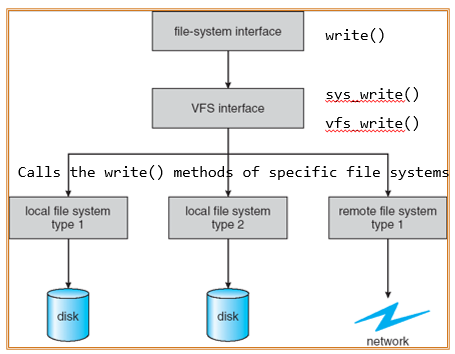
-
In-Memory VFS Objects：
- superblock object: a specific mounted filesystem, corresponding to (but not equal) the superblock in the disk structure 表示整个文件系统
- inode object: a specific file, corresponding to (but not equal) FCB in the disk structure 表示一个单独的文件
- dentry object: an individual directory entry 表示单个目录条目
- file object: an open file as associated with a process, existing as long as the file is opened 表示一个已打开的文件
2.Directory Implementation¶
- Linear list：实现简单，但执行时间长
- Hash Table：具有哈希数据结构的线性列表
- 可以减少目录搜索时间
- 冲突：两个文件名hash到同一位置
- rehashing to 另一个更大的hash table
3.Allocation Methods¶
-
Contiguous allocation
- 每个文件占用磁盘上一组连续的块
- 只需要起始位置和长度
- 支持随机访问
- 空间浪费（动态存 储分配问题）
- 文件不能扩展
- 映射
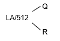- 要访问的块= Q + start_no （Q为商）
- 块内偏移为 R （R为余数）
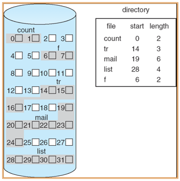
-
改进后的连续分配方案：Extent-Based Systems 解决了文件不能扩展的问题，但依然会出现过度分配
- An extent is a contiguous block of disks
- Extents are allocated for file allocation
- A file consists of one or more extents.
- An extent is a contiguous block of disks
如果将extent做的很小，就变成了如下的Linked allocation
-
隐式链接Linked allocation：每个文件都是磁盘块的链表：块可以分散在磁盘上的任何地方。
- 简单-只需要起始地址
- 自由空间管理系统-不浪费空间
- 不能随机访问，可靠性差
-
映射
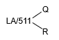因为需要留一位指向下一个块，所以是511。
- 要访问的块是表示文件的块链中的第Qth块。
- 块内偏移为 R + 1 (加一是因为pointer在第一位上)
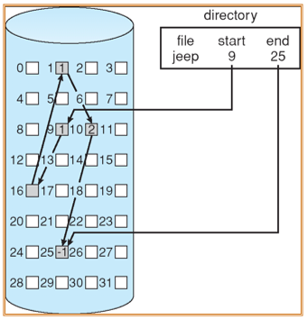
-
显示链接File-Allocation Table：通过在内存当中的数据结构，提高了Linked allocation不能随机访问的效率。但同时也消耗了更多空间（且需要持久化，每一次系统启动时都要把FAT表加载到磁盘中）
- FAT的表项与全部磁盘块一一对应，并且可以用-1表示文件的最后一块。
- 支持顺序访问，也支持直接访问（要访问第i块，无须依次访问前i-1块）
- FAT在系统启动时就被读入内存，检索记录是在内存中进行的，因此不仅显著提高了检索速度，而且明显减少了访问磁盘的次数。
- FAT需要占用一定内存空间
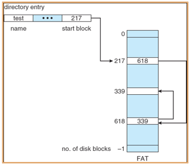
-
Indexed allocation：将所有指针聚集到索引块中。
- 需要索引表（类似于页表）
- 支持随机访问
- 动态访问没有外部碎片，但有索引块的开销。
- 一个最大256K字、块大小为512字的文件中从逻辑映射到物理时，只需要1块索引表。
-
映射
- Q = displacement into index table
- R = displacement into block
-
索引块的主要问题是，每个文件必须有一个索引块，当文件很小时（比如只有数个盘块），该方式仍为之分配一个索引块，此时索引块的利用率很低；而当文件很大时，需要更多的指针：
-
链式解决办法：Linked scheme：索引表的链接块（没有大小限制）。
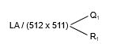因为需要留一位指向下一个index table，所以是511。 * Q1 = block of index table * R1 is used as follows:
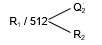
- Q2 = displacement into block of index table
- R2 displacement into block of file:
-
两级level解决方式：
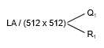- Q1 = displacement into outer-index
- R1 is used as follows:
- Q2 = displacement into block of index table
- R2 displacement into block of file:

一个例子🌰
-
Linked scheme：
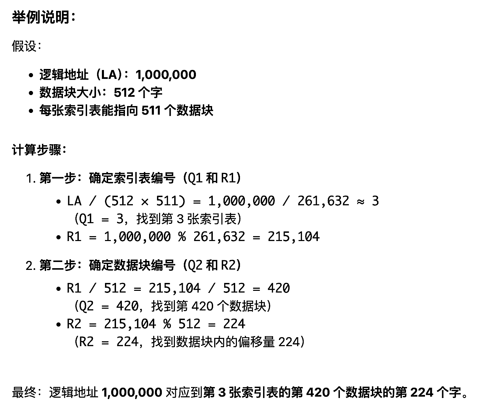 -
Two-Level index：
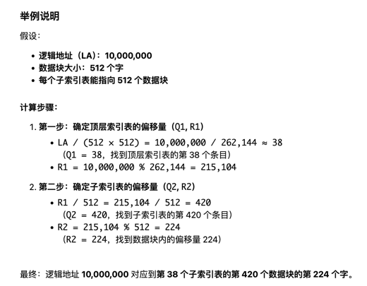
Two-level VS. Linked Schema
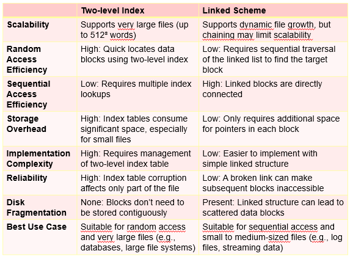
-
Combined Scheme：UNIX (4K bytes per block)
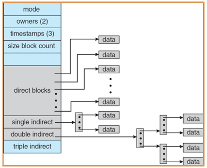- 前几个指针存在文件的inode中
- 指针的签12个指向直接块（direct block），它们包含存储文件数据的块的地址。因此，小的文件（不超过12块）不需要单独的索引块。
- 接下来3个指针指向间接块：第一个指向一级间接块（一级间接块为索引块，它包含的不是数据，而是真正包含数据的块的地址）；第二个指向二级间接块（它包含了一个块的地址，而这个块内的地址指向了一些块，这些块中又包含了指向真实数据块的指针）；最后一个指针为三级间接块。
总结¶
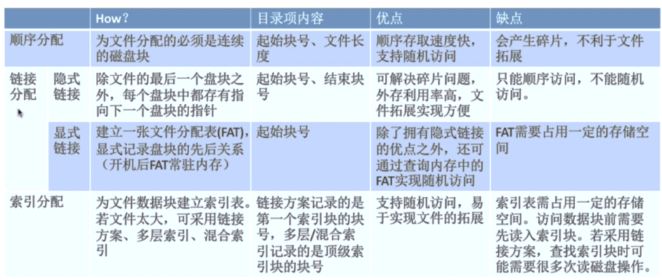
4.Free-Space Management¶
-
使用Bit vector：放在超级块中
- 1代表block[i]空闲
- 0代表block[i]被占用
- 寻找第一个空闲块：
(number of bits per word) * (number of 0-value words) + offset of first 1 bit
-
Bit map requires extra space
- Example:
block size = 2^12 bytes
disk size = 2^30 bytes (1 gigabyte)
n = 230/212 = 2^18 bits (or 32K bytes) - Easy to get contiguous files
- Example:
-
Linked list (free list) – see figure
- Cannot get contiguous space easily
- But basically can work (FAT)
- No waste of space
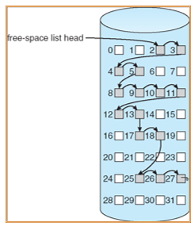
-
Grouping – a modification of the Linked List
- Addresses of the n free blocks are stored in the first block.
- The first n-1 blocks are actually free. The last block contains addresses of another n free blocks
-
Counting 计数的方式比较适合连续的分配方式
- Address of the first free block and number n contiguous blocks
在管理空闲空间时，有两个值非常重要（需要保护）：指针to free list 和 Bit map（必须持久化到磁盘，确保在内存中的位图和磁盘中的位图定期同步）
- bit map 同步方式如下：
- Set bit[i] = 1 in disk
- deallocate block[i]
- Set bit[i] = 1 in memory
5.Efficiency and Performance¶
-
Efficiency dependent on:
- disk allocation and directory algorithms
- types of data kept in file’s directory entry (for example “last write date” is recorded in directory)
- Generally, every data item has to be considered for its effect.
-
Performance
- disk cache – separate section of main memory for frequently used blocks
- free-behind and read-ahead – techniques to optimize sequential access
- improve PC performance by dedicating section of memory as virtual disk, or RAM disk
-
Page Cache：可以使用虚拟内存对memory-mapped访问，更加高效，同时减少I/O
-
I/O Without a Unified Buffer Cache
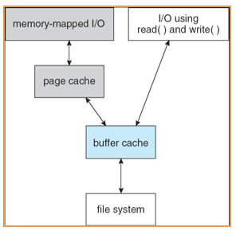 -
Unified Buffer Cache 统一的buffer cache：使用同样的page cache 缓存 Unified Buffer Cache，避免了二次缓存
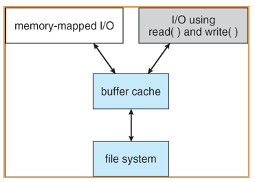